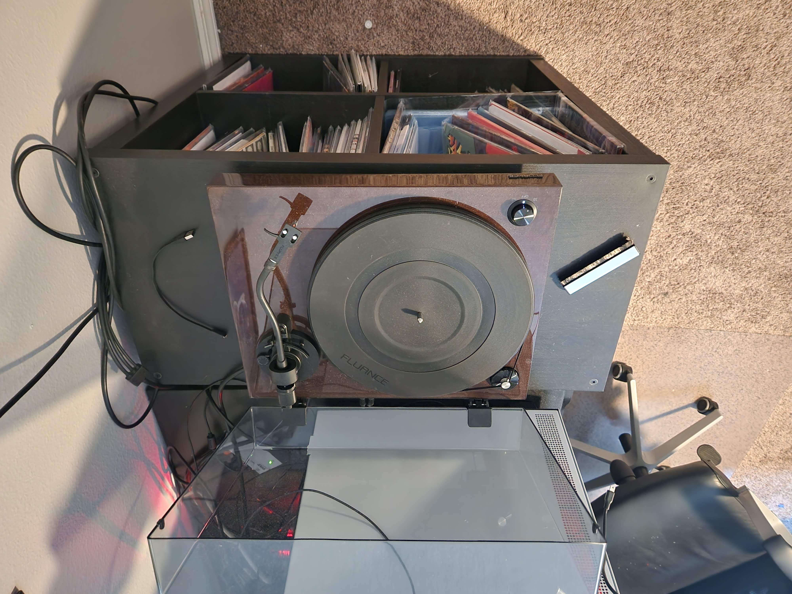
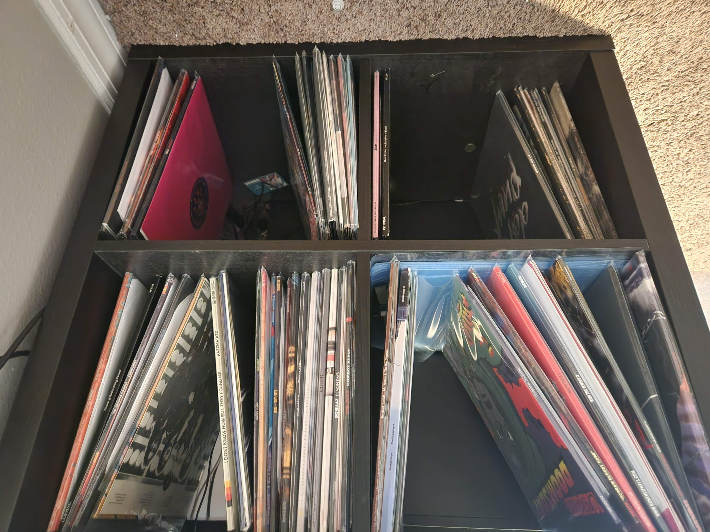
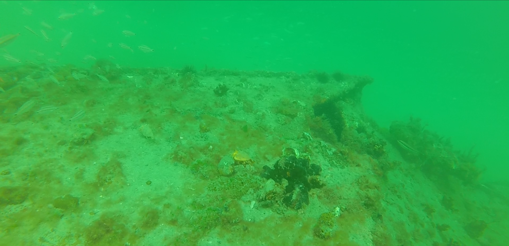
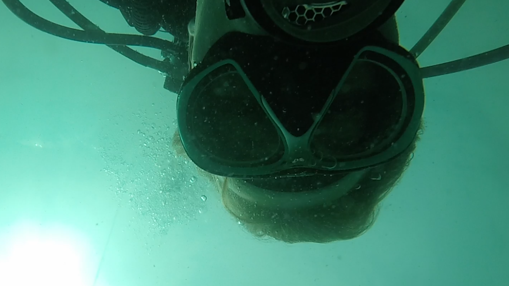

I've got a vinyl record collection!
 A lot of this is made up of mostly hip-hop / rap records (I have a soft spot for old-school underground), but I also have a healthy distribution of rock, metal, and electronic music.
I use a Fluance R-82 turntable to play my records (Click here if you're interested), and I make sure to CLEAN the heck out of them before and after playing them, I want to hold onto them for a while.
I'm a certified open water diver!
 What does this mean?
This means I'm qualified to operate SCUBA (Self Contained Underwater Breathing Apperatus) equipment in open water environment conditions similar to that in which I was trained, and to conduct dives to a depth not to exceed a depth of 60fsw (60 feet of saltwater)
Are you interested in learning to dive? I got my training through NAUI, and if you're interested in getting certified through the same agency as I, check out what they offer here!